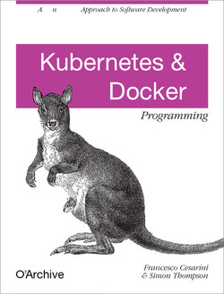

## Kubernetes
### Special Topic

Tracey, Jonah and DVD
June 2018
_?_ for keyboard shortcuts
---
### Overview
- 13 nodes (VMs) and growing
- `kubectl` v1.10
- using `kubeadm` to setup
- RBAC
- namespaces
- like unix users and groups
- ssh alternative
---
### How would I?
- https://git.archive.org/ia/TechDocs/blob/master/guides/docker.md
- create docker container on laptop
- `docker login docker.archive.org`
- `dodker push docker.archive.org/neat-webapp`
---
### How would I?
- https://git.archive.org/ia/TechDocs/blob/master/guides/kubernetes.md
- setup namespace or use global
- `kubectl` yaml/json to setup:
- `docker pull docker.archive.org/neat-webapp`
- pod [group of services/daemons]
- replicaSet, deployment, load balancer
- simple as:
- https://git.archive.org/ia/petabox/blob/master/docker/k8-deploy-iiif.sh
---
### Survey of early adopters
- persistent store
- 'great! but I have small custom postgres DB..'
- networking / ingress
- 'how do I point url hostname at cutover?'
---
### Networking
- using `weave` now
- each node/VM gets weave container
- can route any ingressed traffic to other K8 nodes
- can point `name.archive.org` to a node IP addy
---
### Persisent Store
- start with 4 nodes, 10TB shared 'disk'
- glusterFS
- raid 10 avoids corruption
---
### 'You can Go Your Own Way'
- Easy to take a group of xenial+ VMs
- run some simple setup (for `kubeadm` and `kubectl` etc.)
- copy `.kube/config` to laptop
- good to go!
https://git.archive.org/ia/petabox/blob/master/docker/kubernetes.sh
https://git.archive.org/ia/petabox/blob/master/docker/kubeadm-setup.sh
---
# THE END